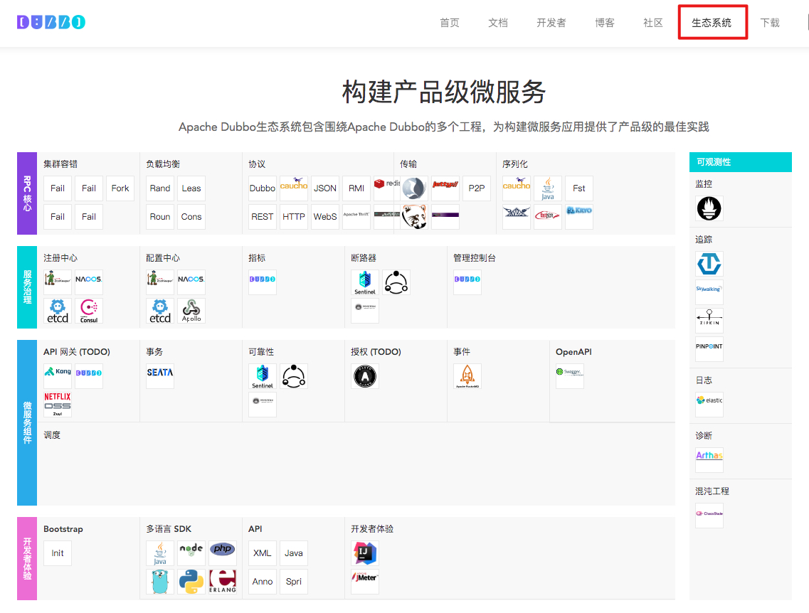

- 00 开篇导读.md
- 01 以真实“商场停车”业务切入——需求分析.md
- 02 具象业务需求再抽象分解——系统设计.md
- 03 第一个 Spring Boot 子服务——会员服务.md
- 04 如何维护接口文档供外部调用——在线接口文档管理.md
- 05 认识 Spring Cloud 与 Spring Cloud Alibaba 项目.md
- 06 服务多不易管理如何破——服务注册与发现.md
- 07 如何调用本业务模块外的服务——服务调用.md
- 08 服务响应慢或服务不可用怎么办——快速失败与服务降级.md
- 09 热更新一样更新服务的参数配置——分布式配置中心.md
- 10 如何高效读取计费规则等热数据——分布式缓存.md
- 11 多实例下的定时任务如何避免重复执行——分布式定时任务.md
- 12 同一套服务如何应对不同终端的需求——服务适配.md
- 13 采用消息驱动方式处理扣费通知——集成消息中间件.md
- 14 Spring Cloud 与 Dubbo 冲突吗——强强联合.md
- 15 破解服务中共性问题的繁琐处理方式——接入 API 网关.md
- 16 服务压力大系统响应慢如何破——网关流量控制.md
- 17 集成网关后怎么做安全验证——统一鉴权.md
- 18 多模块下的接口 API 如何统一管理——聚合 API.md
- 19 数据分库后如何确保数据完整性——分布式事务.md
- 20 优惠券如何避免超兑——引入分布式锁.md
- 21 如何查看各服务的健康状况——系统应用监控.md
- 22 如何确定一次完整的请求过程——服务链路跟踪.md
- 23 结束语.md
14 Spring Cloud 与 Dubbo 冲突吗——强强联合
微服务开发选型，到底是基于 Dubbo 还是 Spring Cloud，相信不少开发的小伙伴都有拿这两个项目作过作比较的经历。本章节就带你走近这两个项目，二者究竟是竞争发展还是融合共赢。
项目发展简介
我们还是先来看看 Dubbo 的发展历史：
- 2012 年由阿里开源，在很短时间内，被许多互联网公司所采用。
- 由于公司策略发生变更，2014 年 10 月项目停止维护，版本静止于 dubbo-2.4.11。处于非维护期间，当当网基于分支重新开源了 DubboX 框架。
- 2017 年 9 月，阿里宣布重启 Dubbo 项目，重新发布新版本 dubbo-2.5.4，并将其作为社区开源产品长期推进下去，此后版本迭代开始重新发力。
- 2018 年 2 月，阿里将 Dubbo 捐献给 Apache 基金会孵化。
- 2019 年 5 月，Apache Dubbo 正式升级为顶级项目。
Dubbo 定位于高性能、轻量级的开源 Java RPC 框架，随着社区的不断丰富，Dubbo 生态越来越繁荣。

官方为快速开发者上手 Dubbo 应用，仿照 start.spring.io，推出快速生成基于 Spring Boot 的 Dubbo 项目的网站：http://start.dubbo.io/。更详细的文档，可到官网查看。
Spring Cloud 的历史很短，Spring Cloud 源于 Spring，来梳理下 Spring 的发展情况：
- 最早可以追溯到 2002 年，由 Rod Johnson 撰写一本名为"Expoert One-on-One J2EE "设计和开发的书。
- 2003 年 2 月左右，Rod，Juergen 和 Yann 于 开始合作开发项目，Yann 为新框架创造了“Spring”的名字。Yann Caroff 在早期离开了团队，Rod Johnson 在 2012 年离开，Juergen Hoeller 仍然是 Spring 开发团队的积极成员。
- 2007 年 11 月，在 Rod 领导下管理 Interface21 项目更名为 SpringSource。
- 2007 年，SpringSource 从基准资本获得了 A 轮融资（1000 万美元），SpringSource 在此期间收购了多家公司，如 Hyperic，G2One 等。
- 2009 年 8 月，SpringSource 以 4.2 亿美元被 VMWare 收购。
- 2012 年 7 月，Rod Johnson 离开了团队。
- 2013 年 4 月，VMware 和 EMC 通过 GE 投资创建了一家名为 Pivotal 的合资企业。所有的 Spring 应用项目都转移到了 Pivotal。
- 2014 年 Pivotal 发布了 Spring Boot。
- 2015 年，戴尔又并购了 EMC。
- 2015 年 Pivotal 发布了 Spring Cloud。
- 2018 年 Pivotal 公司在纽约上市。
从漫长的发展历史中，可见 Spring 的发展也是一波三折。事实上，做 Java 开发基本绕不开 Spring，Spring 社区对 Java 的发展有着极大的影响力，而 Spring Cloud 则是基于 Spring、 Spring Boot 生态提供了一整套开箱即用的全家桶式的解决方案，极大的方便了开发者快速上手微服务开发，背后的商业公司更是为其提供了强大的支撑，同时不少核心项目组件能看到 Netflix OSS 的身影，如 Eureka 等，均在 Netflix 线上的分布式生产环境中已经得到很好的技术验证，无形中增强了信用背书。
Dubbo 在国内有较大的市场影响力，但国际市场上 Spring Cloud 的占有率要比 Dubbo 大，毕竟原生的英文环境及 Spring 社区的庇荫都是生态繁荣的优势。随着 Dubbo 正式成为 Apache 顶级项目后，相信未来在国际市场上的采用度会越来越高。
技术选型困扰
二者的交集是发现在 2015 年左右，一方面 Dubbo 在国内应用广泛，以简单易上手、高性能著称，遗憾之处在于社区几乎停滞。而此时 Spring Cloud 以全新姿态面世，基于 Spring Boot 的约定优于配置的原则，在 Java 轻量级开发中迅速传播开来，但组件种类多、资料少、学习曲线高也是不争的事实。
早期大家做技术选型时，经常会将二者拿出来作比较，典型的可参照：《微服务架构的基础框架选择：Spring Cloud 还是 Dubbo？》一文。2016 年公司在做技术选型时，我同样也面临这个问题，鉴于当时的业务需求及团队的技术储备能力，最终还是选择了处在非维护期的 Dubbo，后期无法满足需求时再考虑重构。
Spring Cloud 早期的服务注册中心是基于 Eureka，Dubbo 采用的注册中心是 ZooKeeper，一套服务存在两个服务管理方案，复杂度相当高，又各自在各自的领域内，有各自的解决方案，要整合起来，也非易事。
近两年来 Spring Cloud Alibaba 的出现，这种二选一的局面得到了极大的改善。一方面，可以替代原项目中一些不再维护的项目功能。另一方面，可以将阿里技术生态与 Spring Cloud 生态融合起来。二者都可以采用 Nacos 作为服务注册中心，同时也完美替代 Spring Cloud Config 提供了更简洁直观的配置管理，降低了复杂度。另外，也为 Spring Cloud 生态中也引入了 RPC 解决方案——Dubbo，与 REST 方式形成互补。
二者融合实战
现在我们就通过一个业务功能——会员通过积分兑换来洗车券去洗车，将两个项目融合在一起。
新增 parking-carwash 父项目
此模块需要完成对外提供 RPC 接口的功能，代码结构如下

下属两个子项目模块，api 项目只是简单的 Java 项目，构建成 jar 包供外部项目依赖调用，serv 项目基于 Spring Boot 提供实际业务服务，以 jar 的形式独立运行。
parking-carwash-serv 服务提供者
在 api 模块中编写接口，同时将对应的实体放在这里，以便被依赖时正常使用。参照之前的方式配置基本的基础组件，再引入 Dubbo 相关的 jar，配置如下：
<!-- 必须包含 spring-boot-starter-actuator 包，不然启动会报错。 -->
<dependency>
<groupId>org.springframework.boot</groupId>
<artifactId>spring-boot-actuator</artifactId>
</dependency>
<!-- Dubbo Spring Cloud Starter -->
<dependency>
<groupId>com.alibaba.cloud</groupId>
<artifactId>spring-cloud-starter-dubbo</artifactId>
</dependency>
为体验下 yml 配置文件的应用情况，本项目中引入 bootstrap.yml 文件，完全可以采用一个 application 配置文件：
spring:
application:
name: carwash-service
main:
allow-bean-definition-overriding: true
cloud:
nacos:
discovery:
enabled: true
register-enabled: true
server-addr: 127.0.0.1:8848
application.properties 中配置 Dubbo：
# dubbo config
dubbo.protocols.dubbo.name=dubbo
dubbo.protocols.dubbo.port=-1
dubbo.scan.base-packages=com.mall.parking.carwash.serv.service
dubbo.registry.address=spring-cloud://127.0.0.1
dubbo.registry.register=true
dubbo.application.qos.enable=false
#此配置项为了防止 nacos 大量的 naming 日志输出而配置
logging.level.com.alibaba.nacos.client.naming=error
编写接口及实现类：
public interface WashService {
int wash(String json) throws BusinessException;
}
@Service(protocol = "dubbo")
@Slf4j
public class WashServiceImpl implements WashService {
@Autowired
CarWashMapper carWashMapper;
@Override
public int wash(String json) throws BusinessException {
CarWash carWash = JSONObject.parseObject(json, CarWash.class);
int rtn = carWashMapper.insertSelective(carWash);
log.info("car wash data = " + json + "> write suc...");
return rtn;
}
}
注意：@Service 注解不再使用 Spring 的，而是采用 Dubbo 提供的注解 org.apache.dubbo.config.annotation.Service，注释中同时提供了多种属性值，用于配置接口的多种特性，比如服务分组、服务版本、服务注册是否延迟、服务重试次数等等，依实际使用情况而定。
Application 启动类，与一般 Spring Cloud 的启动类无异。启动后，在 Nacos 的服务列表中可以看到本模块的服务已经注册成功。
parking-member 服务消费者
在前期构建完成的 parking-member 项目中引入 Dubbo 的 jar 和 api 接口 jar。
<!-- Dubbo Spring Cloud Starter -->
<dependency>
<groupId>com.alibaba.cloud</groupId>
<artifactId>spring-cloud-starter-dubbo</artifactId>
</dependency>
<dependency>
<groupId>com.mall.parking.root</groupId>
<artifactId>parking-carwash-api</artifactId>
<version>0.0.1-SNAPSHOT</version>
</dependency>
application.properties 配置：
#dubbo config
dubbo.registry.address=nacos://localhost:8848
dubbo.application.qos.enable=false
dubbo.cloud.subscribed-services=carwash-service
spring.main.allow-bean-definition-overriding=true
#不检测服务提供者是否在线，生产环境建议开启
dubbo.consumer.check=false
#more naming logs output,config this to avoid more log output
logging.level.com.alibaba.nacos.client.naming=error
编写服务调用类：
@Reference
WashService washService;//像调用本地 jar 一样，调用服务
/**
* {"plateNo":"湘 AG7890","ticketCode":"Ts0999"}
*
* @param json
* @return
* @throws BusinessException
*/
@PostMapping("/wash")
public CommonResult<Integer> wash(String json) throws BusinessException {
log.debug("add vehicle = " + json);
CommonResult<Integer> result = new CommonResult<>();
int rtn = washService.wash(json);
result.setRespData(rtn);
return result;
}
测试
服务提供者启动后，再启动会员模块服务，使用 Postman，访问 vehicle/wash 方法，可以看到服务正常调用，数据写入 park-carwash 数据库。
至此，我们将 Dubbo 与 Spring Cloud 两大项目完美整合到一个项目中，项目中既可以用到 RPC 框架的高效能，也可以享受到全家桶的便利性。
留下一题思考题：
- 有两种引入 Dubbo 的 starter 方式，spring-cloud-starter-dubbo 和 dubbo-spring-boot-starter，这两种方式有什么区别呢？